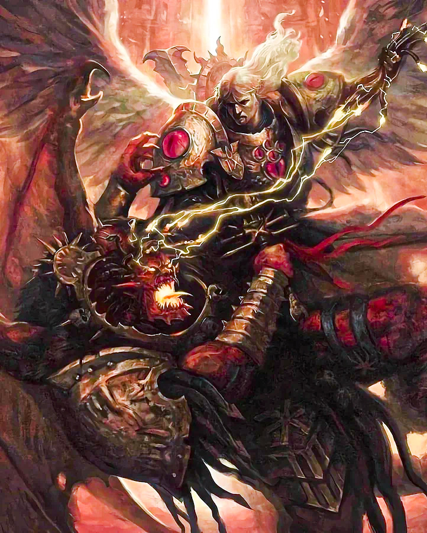
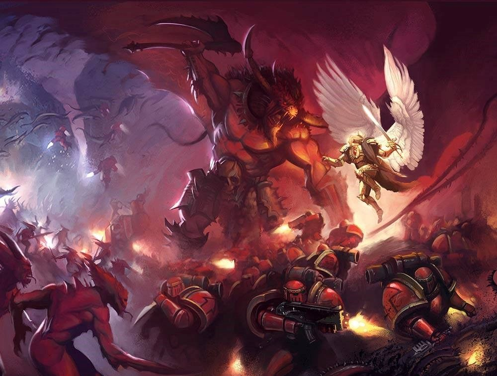

Sanguinius

History
- Early Life
- Life As a Marine
As a child the angle primarch was sent to the plant of Baal Secundus irradiated hellscape due to war it was a wasteland full of small tribes of suvivors after weeks he could crush fire scorpions and by the time he was a year old he was a man, being able to walk though the radation of baal with no problem and the tribes accpeted him as a profit. Sanguinius loved his people and they loved him, his people were attacked once and when they were Sanguinius furry was let out and he killed all of the attackers. Quickly becoming the ruler of all of baal soon after that he wouls quickly found and recurted by his father.
Once he became a Marine he formed his leagon of the blood angles, using the people from his home to build out his ranks, as he got back to earth to meet his other sons of his leagon unlike others Sanguinius pleged his loyility to them insted of having them pledge to him, as a marine he taught his sons of his leagon how to quell their rage and fury and focus it into a postive goal. He fought in many battles slaying many enemys and rushing into battle with the goals and ideas of his father on his back. Being the embodyment of what his fathers dream was.
(Sanguinius Last and Final Speech)
Battles
During the Great crusade Sanguinius and his sons were one of the mains fighting forces due to their number and their effectiveness the blood angles were often sent out into battle to clean up and keep people safe. Along with them cleaning house where ever they go he also met his brother Horus who he would becoome very close with, along with that Sanguinius got a vison of his own death.
During The Horus Heresy Sanguinius had been in many fights, constatly going back and froth with the demon Kabonda, and fighting off the trator forces of his brother Horus. But his most notable fight is his fiinal fight where he stood alone among the bodies of his dead sons and stood his ground to protect his father, fighting off his brother angron and swiftly defeating him before running a melstrem though his forces and going to fight Horus. An its to the brother he loved the most that heh loss his life.
Equpment

Implants
- Due to Sanguinius being a Primarch he has no implants but he has completly diffrent organs and wings that he can sorta fly with.
Teir list
| S | A | B |
|---|---|---|
| Dante | Albinus | Asimuth |
| Mephiston | Borgion | Morlaeo Arteros |
| astorath | Corbulo | Donato Larracus |